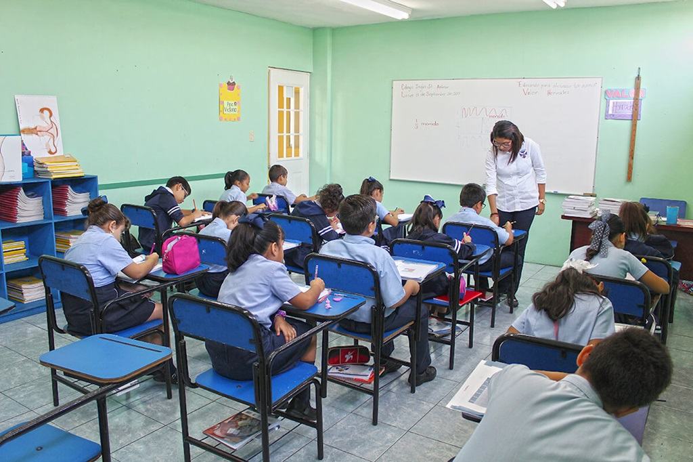
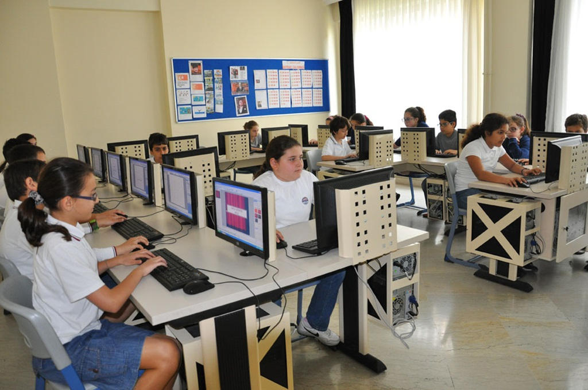

La Educación Secundaria Obligatoria (ESO), es una etapa educativa que se extiende a lo largo de cuatro cursos académicos una vez finalizada la Educación Primaria. Normalmente se realiza entre los 12 y los 16 años, pero el alumnado tiene derecho a permanecer cursando estos estudios hasta los 18 años, extendiéndose 1 año más en caso de repetir el cuarto curso. Te explicamos a continuación algunos aspectos fundamentales de la ESO, tomando como base el nuevo currículum propuesto por la LOMLOE.
 